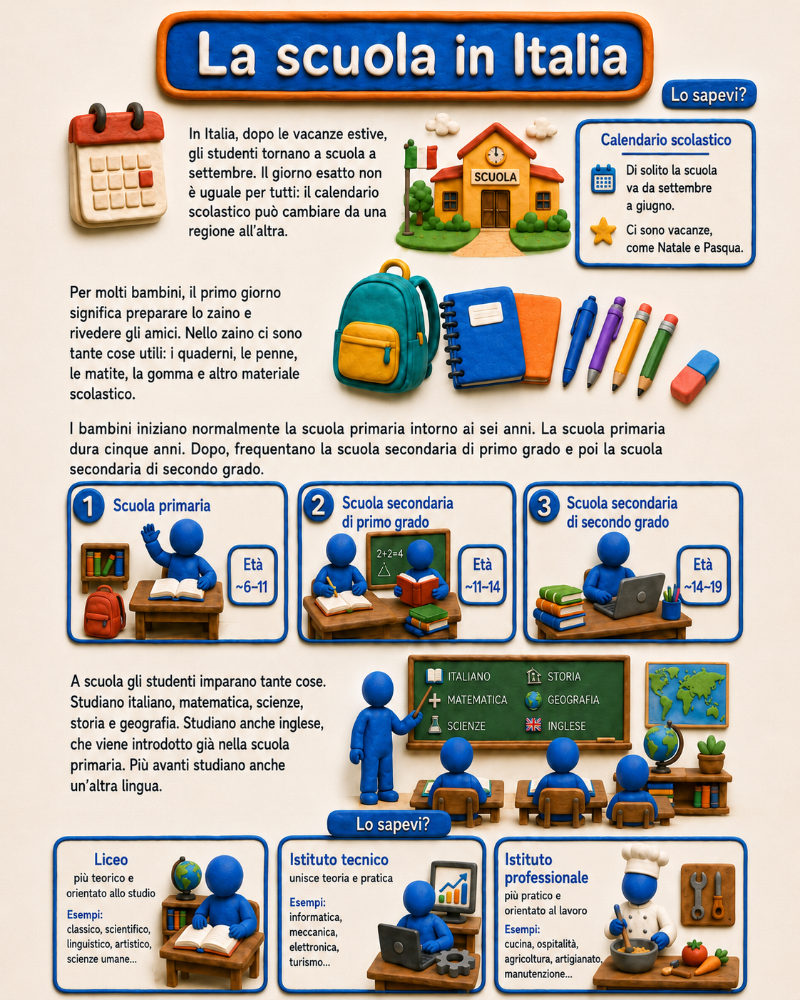
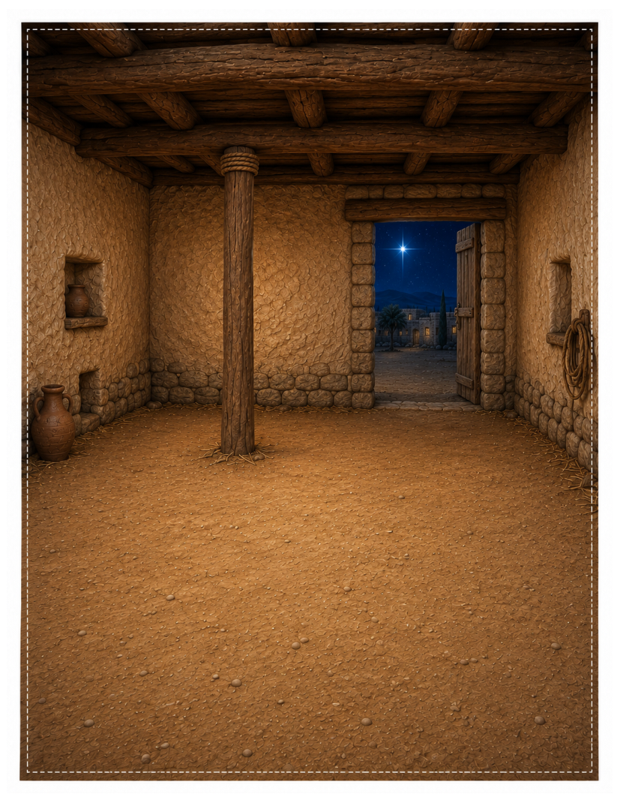

Scopri aspetti della cultura italiana attraverso immagini, tradizioni, geografia e risorse interattive.
Explore Italian culture through visual materials, traditions, geography, and interactive resources.

🏫 La scuola in Italia
Scopri l’anno scolastico, i livelli di scuola,
le materie e i diversi percorsi della scuola superiore.
Explore the school year, school levels,
subjects, and upper-secondary pathways in Italy.
Esplora la scuola · Explore School ↗

🍂 L’autunno in Italia
Vocabolario, vendemmia, tartufi, San Martino e altre tradizioni d’autunno.
Autumn vocabulary, grape harvest, truffles, San Martino, and seasonal traditions.
Esplora l’autunno · Explore Autumn ↗
🎭 Il Carnevale
Maschere, costumi, storia e tradizioni
Masks, costumes, history, and traditions
Italy Explorer
Esplora la geografia, la storia, i luoghi
e la cultura italiana.
Explore Italian geography, history,
places, and culture.
Apri Italy Explorer · Open Italy Explorer ↗

🌸 Poesia · Poetry
Poesie italiane per stagione e tema.
Explore Italian poetry by season and theme.
Esplora la poesia · Explore Poetry ↗

⭐ Costruiamo il presepe
Ritaglia, costruisci e descrivi un presepe
attraverso una scena natalizia ispirata
alla Giudea del I secolo.
Cut, build, and describe a nativity scene
with a first-century Judean-inspired setting.
Apri l'attività · Open Activity ↗